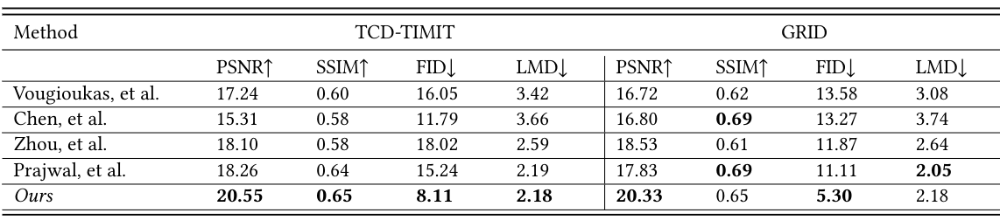

Synthesising video of talking heads from speech audio has many potential applications, such as video conferencing, video animation production and virtual assistants. Although there has been considerable prior work on this task, the quality of generated videos is typically limited in terms of overall realism and resolution. Many previous models generate low-resolution video or cropped faces. Low resolution video is generally not suitable for deployment in many real world applications, such as a virtual assistant.
Recent advances in image synthesis have been successful at generating high-resolution images from noise (e.g. StyleGAN, BigGAN, etc). Karras et al. propose a style-based generator StyleGAN that synthesises high quality images that are largely indistinguishable from real ones. Some works have studied the latent space of StyleGAN (e.g. Image2StyleGAN, GANSPACE, InterFaceGAN) and discovered meaningful semantics for manipulating images. Recent work has leveraged the richness of a pre-trained StyleGAN generator to generate high-resolution videos from noise by decomposing (disentangling) the motion and content in the latent space (e.g. MoCoGAN-HD, StyleVideoGAN, StyleGAN-V). Tian et al. discover motion trajectories in the latent space to render high-resolution videos while image and motion generators are trained on different domain datasets. Inspired by these advances, we propose a novel method for generating high-resolution videos conditioned on speech audio by constructing trajectories in the latent space of a pre-trained image generator (StyleGAN).
Our framework uses a pre-trained image encoder (pSp) to find the latent code of a given identity image in the latent space of the generator. We then train a recurrent audio encoder along with a latent decoder to predict a sequence of latent displacements to the encoded identity image. In this stage, we show our approach can generate talking-head videos with accurate mouth movements conditioned on speech audio. To improve the visual quality of the generated videos further, we tune the generator on a single image or short video of a target subject using the PTI method.
Here, we show a video of multiple speakers driven by the same speech audio.
We compare our work against four state of the art models ( Vougioukas et al., Chen et al. ,Zhou et al. and Prajwal et al.) and use the authors produced codes of these models to generate the videos. Below, we show the comparisons on two widely used datasets: GRID and TCD-TIMIT.
GRID
TCD-TIMIT
We also evaluate our model on standard measures (PSNR, SSIM, FID and LMD).
@inproceedings{alghamdi2022talking-head,
title={Talking Head from Speech Audio using a Pre-trained Image Generator},
author={Alghamdi, Mohammed M. and Wang, He and Bulpitt, Andrew J., and Hogg, David C.},
booktitle={Proceedings of the 30th ACM International Conference on Multimedia},
year={2022}
}